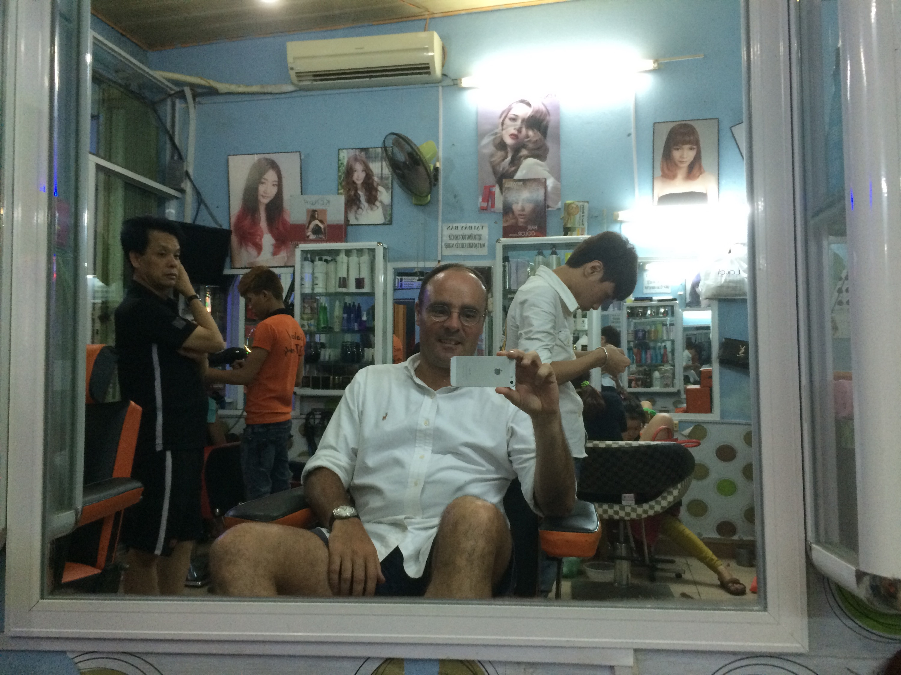
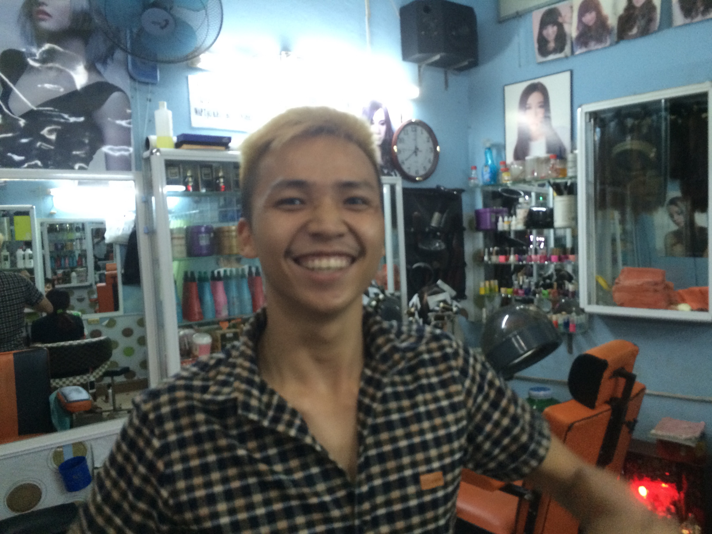
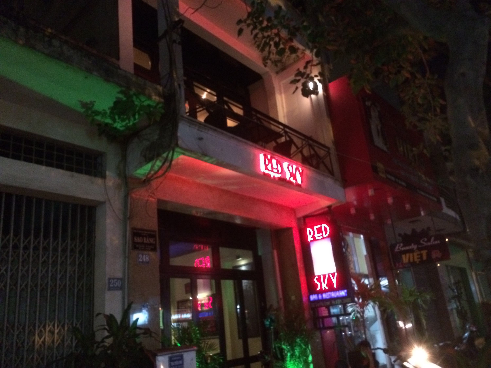
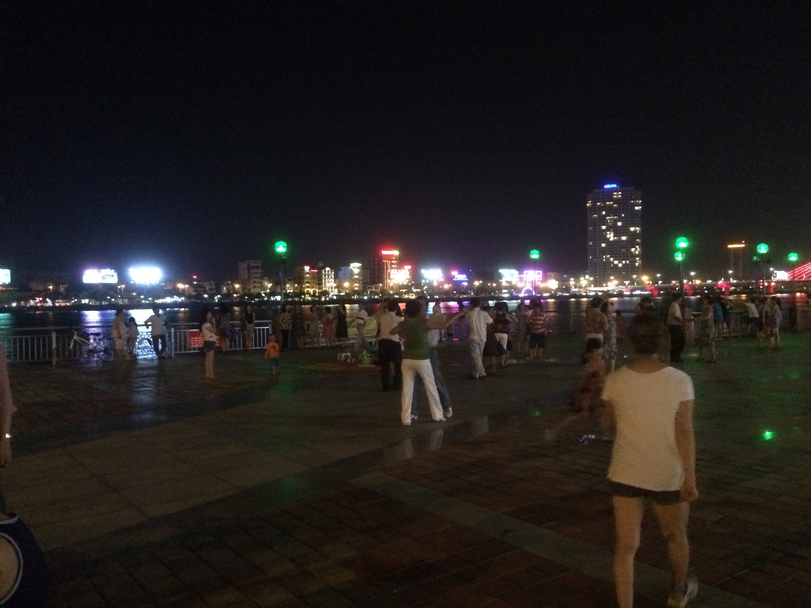
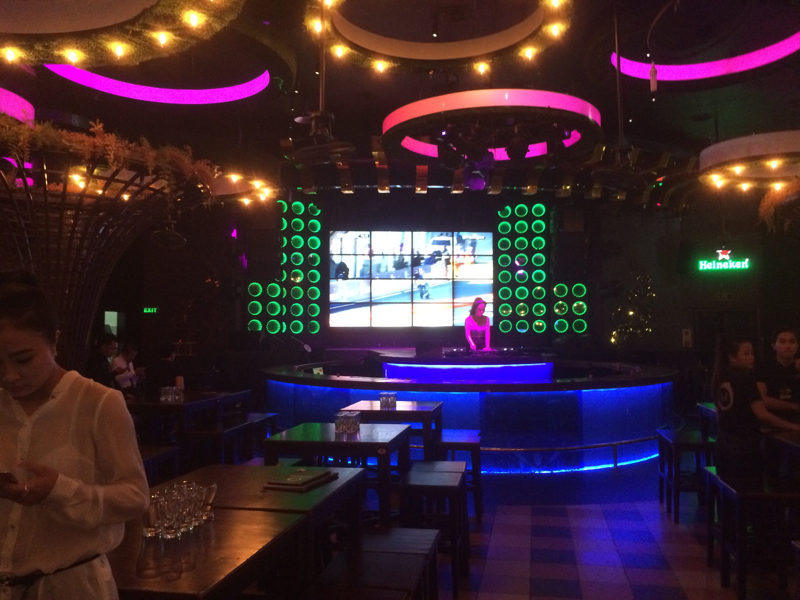
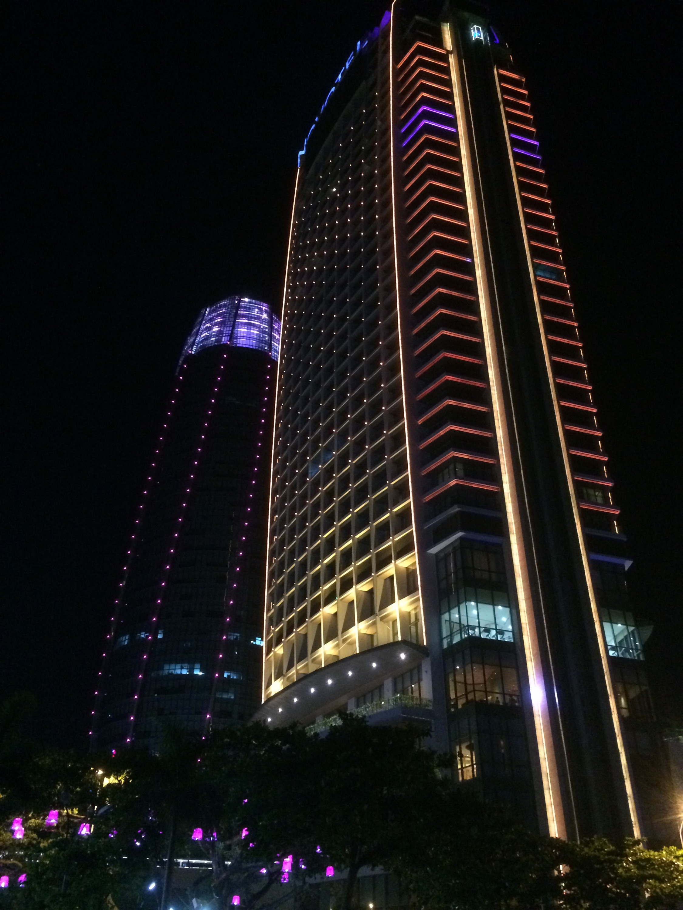
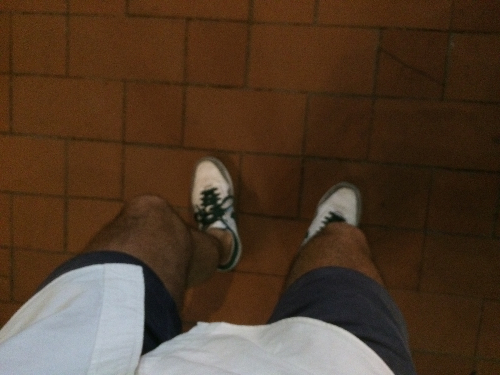
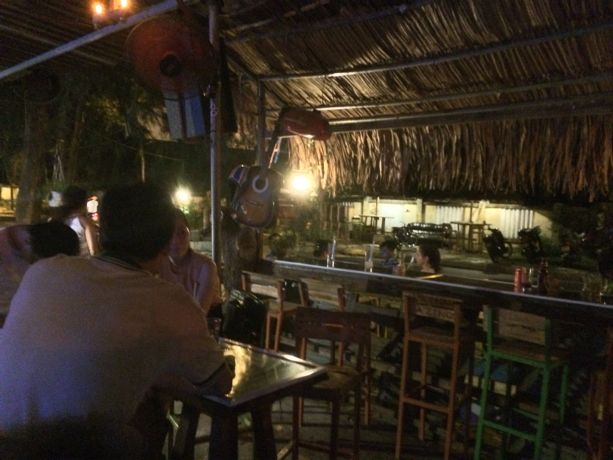
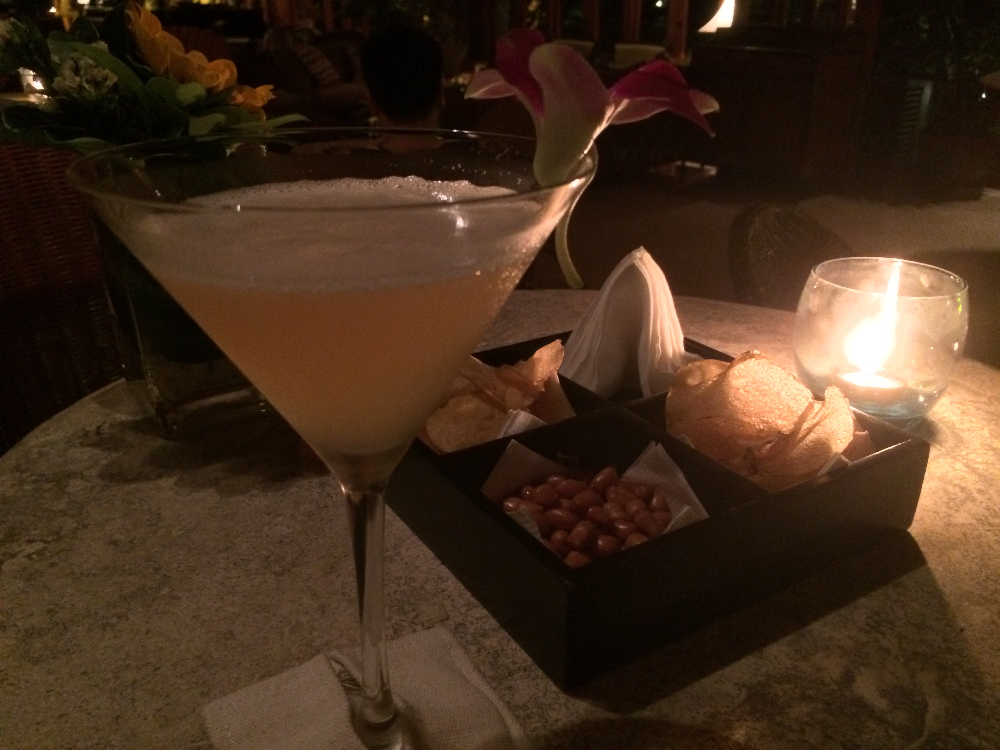

Friday night in Da Nang
May 29, 2015Ok, it’s Friday night, the hard work part of my stay in Da Nang is mostly done – so I hit the road for a bar hopping tour.
Dinner on the road: street food along the beach (Nadine, Doreen, Hamarz, you know the place). What’s new: ordering became easy by now. Not that I speak a relevant word of Vietnamese but I got used to the fact that I don’t ;)
Then it’s about 8. Too early for bars. So I decide a haircut is due…

This is my crazy hairdresser:

Then I have a beer at Red Sky Bar.

Either I’m too early or the bar is not hip anymore: too few people and the wrong ones…
Then I have to visit my friend San: she is a lovely Vietnamese girl that promotes San Miguel beer in the bars of Da Nang. And she Vibered me the pic of her new outfit:
So my bike & me drive to Bamboo bar: a bar in Bach Dang where older Westerners pick up Vietnamese girls and where every sport channel has a screen. I have a San Miguel Light and watch Federer win in Roland Garos.
Bar hopping means you have to keep moving. Next stop: a dancing event at the border of the Han river.

For those who know: like Lido or the dancing club down in Hofbräu-Keller. Playing with Vietnamese kids & families, veerry nice atmosphere.
Next I happen to drive by a place with a sign stating it’s a “Beer garden”. So must stop – that means parking the bike (like in every place here).:

As it turns out, a Vietnamese beer garden is a different concept than a German one: it’s more like a disco where they also serve beer…

Remember: DJs in hip locations are always girls in Vietnam!
The disco sound feels good. So why not go to a place that I know and that has good (loud) music? On top of Novotel there is the in-famous SkyBar.

So: parking the bike, going to the elevator that leads to floor #57 – “Sorry Sir, we have a strict policy: no shorts”.

Tough luck.
So I finish the evening in one of my “standards”, the Minsk Bar. Close by the hotel, very laid back, reggae music.

But since it’s Friday evening, the end is not the end yet. Back at the hotel, 1 more of their Whiskey sours:

As I’m typing this, I’ve had 3 of them and it’s past 23:00. And tomorrow I am meeting the guys of the local Java Developers Club. And before that I plan to swim & run on the beach – so: Go to bed, Till!
Although there are no pics: I met about 10 new people, 50/50 Vietnamese & foreigners. It’s the super-communicative country!